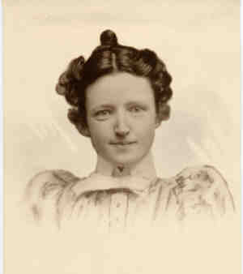

|
|
| 
Olive JACKSON (1868-1912) |
Olive JACKSON 455,3462,3536
Noted events in her life were: • Census, 10 May 1910, Howard, Elk Co., Kansas. 3536 Olive married Allison Thompson AYRES, son of Jeremiah AYRES and Margaret Eliza DOUTHITT, on 29 Dec 1892.3530 (Allison Thompson AYRES was born on 14 Jul 1865 in College Hill, Madison Co., Kentucky 3531,3532, christened on 15 Jul 1866 in Thorntown, Boone Co., Indiana,3533 died on 18 Dec 1945 in Howard, Elk Co., Kansas and was buried in A.T. Ayres Mausoleum, Howard, Elk Co., Kansas.). The cause of his death was bronchial pneumonia. |
|
only search Stockdale Coddington Genealogy |
Table of Contents | Surnames | Name List
This website was created 9 Apr 2025 with Legacy 10.0, a division of MyHeritage.com; content copyrighted and maintained by coddgenealogy at gmail d0t com